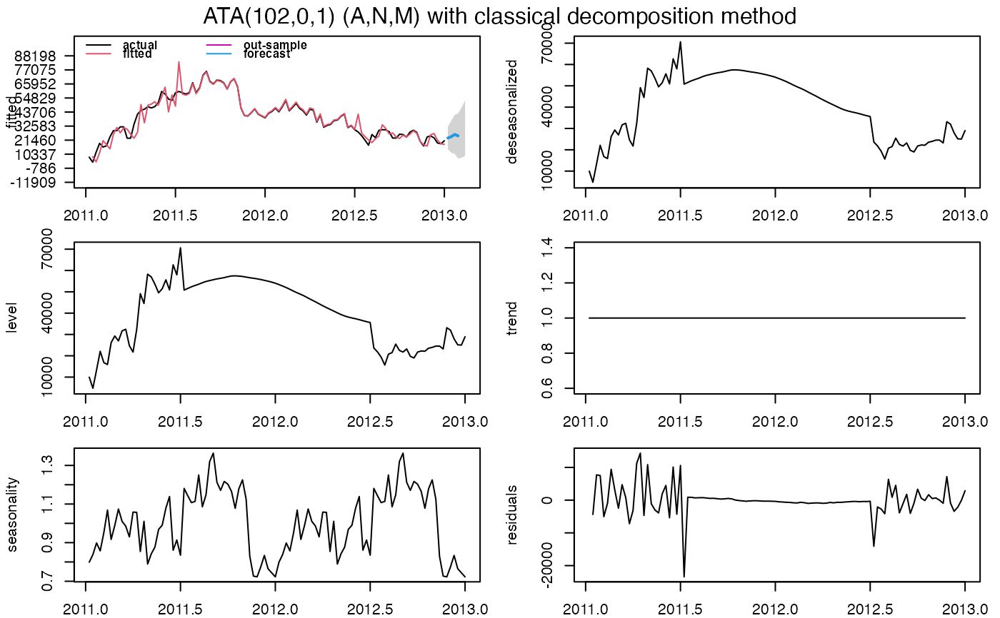
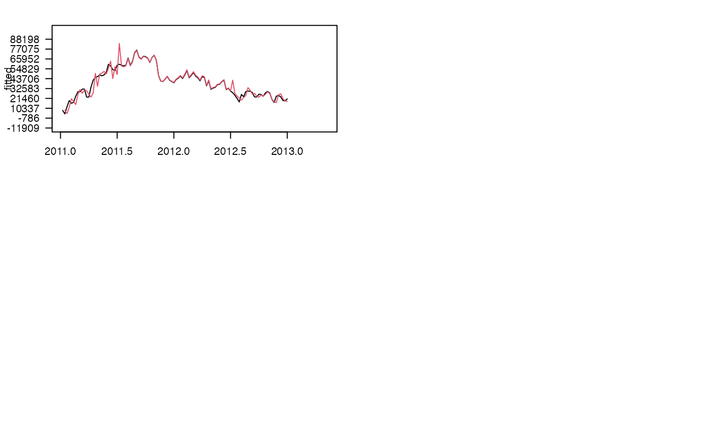

forecast is a generic function for forecasting of the ATA Method.
forecast(object, ...) # S3 method for ata forecast( object, h = NULL, out.sample = NULL, ci.level = 95, negative.forecast = TRUE, print.out = TRUE )
| object | An |
|---|---|
| h | Number of periods for forecasting. |
| out.sample | A numeric vector or time series of class |
| ci.level | Confidence Interval levels for forecasting. Default value is 95. |
| negative.forecast | Negative values are allowed for forecasting. Default value is TRUE. If FALSE, all negative values for forecasting are set to 0. |
| print.out | Default is TRUE. If FALSE, forecast summary of ATA Method is not shown. |
An object of class ata and forecast values.
#'Yapar G, Yavuz I, Selamlar HT (2017). “Why and How Does Exponential Smoothing Fail? An In Depth Comparison of ATA-Simple and Simple Exponential Smoothing.” Turkish Journal of Forecasting, 1(1), 30--39.
#'Yapar G, Capar S, Selamlar HT, Yavuz I (2018). “Modified Holt's Linear Trend Method.” Hacettepe University Journal of Mathematics and Statistics, 47(5), 1394--1403.
#'Yapar G (2018). “Modified simple exponential smoothing.” Hacettepe University Journal of Mathematics and Statistics, 47(3), 741--754.
#'Yapar G, Selamlar HT, Capar S, Yavuz I (2019). “ATA method.” Hacettepe Journal of Mathematics and Statistics, 48(6), 1838-1844.
Ali Sabri Taylan and Hanife Taylan Selamlar
demoATA <- window(fundingTR, start = tsp(fundingTR)[1], end = 2013) ata.fit <- ATA(demoATA, parPHI = 1, seasonal.test = TRUE, seasonal.model = "decomp")#> $sigma2 #> [1] 21865409 #> #> $loglik #> [1] -1116.707 #> #> $AIC #> [1] 2247.413 #> #> $AICc #> [1] 2248.58 #> #> $BIC #> [1] 2265.924 #> #> $MSE #> [1] 20591695 #> #> $MAE #> [1] 2572.406 #> #> $sMAPE #> [1] 9.250939 #> #> $MASE #> [1] 0.06425588 #> #> $OWA #> [1] NA #>#> ATA(102,0,1) (A,N,M) #> #> model.type: M #> #> seasonal.model: decomp #> #> seasonal.type: M #> #> forecast horizon: 6 #> #> accuracy.type: sMAPE #> #> Model Fitting Measures: #> #> sigma2 loglik MAE MSE #> 21865408.60927956 -1116.70662532 2572.40601029 20591695.48640890 #> RMSE MPE MAPE sMAPE #> 4537.80734347 -0.59637643 9.15770863 9.25093877 #> MASE OWA #> 0.06425588 NA #> #> In-Sample Accuracy Measures: #> #> MdAE MdSE RMdSE MdPE MdAPE #> 856.9416765 734349.0368611 856.9416765 -0.9484595 2.0365905 #> sMdAPE #> 2.0160611 #> #> Out-Sample Accuracy Measures: #> #> MAE MSE RMSE MPE MAPE sMAPE MASE OWA #> NA NA NA NA NA NA NA NA #> #> Out-Sample Accuracy Measures: #> #> MdAE MdSE RMdSE MdPE MdAPE sMdAPE #> NA NA NA NA NA NA #> #> Information Criteria: #> #> AIC AICc BIC #> 2247.413 2248.580 2265.924 #> #> #> user system elapsed #> 0.100 0.014 0.114 #> #> calculation.time: 0.1141 #> #> #> Forecasts: #> Time Series: #> Start = 2013.01960059172 #> End = 2013.11575443787 #> Frequency = 52 #> [1] 23110.07 24246.94 25993.20 24803.00 27533.68 30919.02 #> #>#> $sigma2 #> [1] 21865409 #> #> $loglik #> [1] -1116.707 #> #> $AIC #> [1] 2247.413 #> #> $AICc #> [1] 2248.58 #> #> $BIC #> [1] 2265.924 #> #> $MSE #> [1] 20591695 #> #> $MAE #> [1] 2572.406 #> #> $sMAPE #> [1] 9.250939 #> #> $MASE #> [1] NA #> #> $OWA #> [1] NA #> #> Time Series: #> Start = 2013.01960059172 #> End = 2013.34652366864 #> Frequency = 52 #> lower forecast upper #> 2013.020 7871.29880 16808.20 25745.11 #> 2013.039 4996.36502 17635.06 30273.75 #> 2013.058 3425.95965 18905.14 34384.31 #> 2013.077 165.68183 18039.49 35913.31 #> 2013.097 42.01744 20025.55 40009.08 #> 2013.116 596.87599 22487.74 44378.60 #> 2013.135 -4357.00005 19287.83 42932.66 #> 2013.154 -4465.32858 20812.06 46089.45 #> 2013.173 -4201.52902 22609.19 49419.91 #> 2013.193 -7003.64427 21257.33 49518.31 #> 2013.212 -8897.63394 20742.73 50383.09 #> 2013.231 -11388.73478 19569.62 50527.97 #> 2013.250 -9953.99215 22268.48 54490.95 #> 2013.270 -11196.08052 22242.76 55681.60 #> 2013.289 -16635.24110 17977.25 52589.74 #> 2013.308 -14483.80484 21263.82 57011.44 #> 2013.327 -20243.53517 16604.27 53452.08 #> 2013.347 -20195.01611 17721.07 55637.15#> Error in xy.coords(x, y, setLab = FALSE): 'x' and 'y' lengths differ